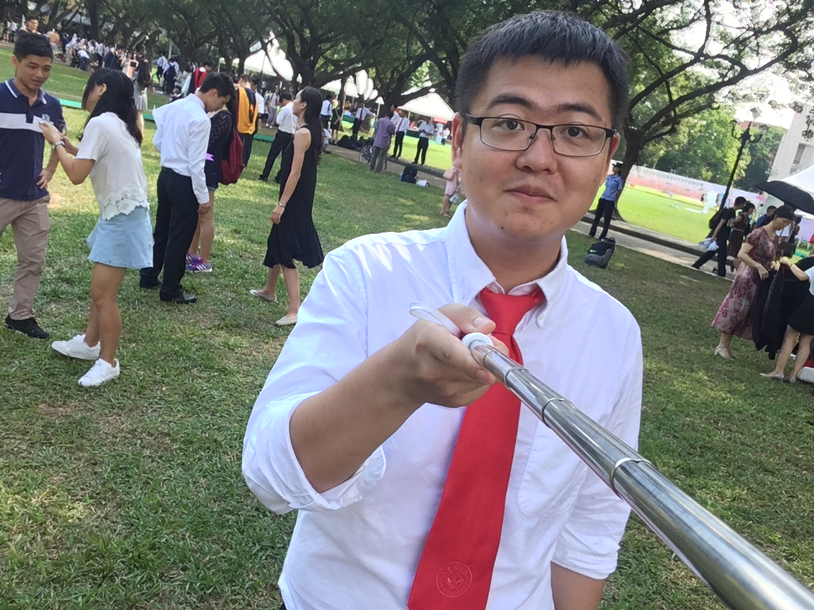

|  | Lecturer |
Currently a lecturer at Guangdong University of Technology. Before that, I graduated from Sun Yat-Sen University with a PhD degree, supervised by Pro.Liang Lin, I was a visiting student in the University of Sydney and Microsoft Research Asia, worked with Pro.Wanli Ouyang and Dr.Jingdong Wang, respectively.
My research topic focuses on computer vision and machine intelligence, including real-world image processing, machine translation and related- fields
GTAE: Graph Transformer–Based Auto-Encoders for Linguistic-Constrained Text Style Transfer
Yukai Shi, Sen Zhang, Chenxing Zhou, Xiaodan Liang, Xiaojun Yang, Liang Lin
ACM Transactions on Intelligent Systems and Technology(TIST), 2021. [PDF]
Unsupervised multi-view clustering by squeezing hybrid knowledge from cross view and each view
Junpeng Tan, Yukai Shi, Zhijing Yang, Caizhen Wen, Liang Lin
IEEE Transactions on Multimedia (T-MM), 2021. [PDF]
DDet: Dual-path dynamic enhancement network for real-world image super-resolution
Yukai Shi, Haoyu Zhong, Zhijing Yang, Xiaojun Yang, Liang Lin
IEEE Signal Processing Letters(SPL). [PDF]
Face hallucination by attentive sequence optimization with reinforcement learning
Yukai Shi, Guanbin Li, Qingxing Cao, Keze Wang, Liang Lin
IEEE Transactions on Pattern Analysis and Machine Intelligence (T-PAMI), 2020. [PDF]
Difficulty-aware image super resolution via deep adaptive dual-network
Jinghui Qin, Ziwei Xie, Yukai Shi, Wushao Wen
IEEE International Conference on Multimedia and Expo(ICME), 2019. [PDF]
An Optimal Deployment Scheme for Extremely Fast Charging Stations
Ping Zhong, AiKun Xu, Yilin Kang, Shigeng Zhang and Yiming Zhang
Peer-to-Peer Networking and Applications (P2PNA), 2021. Under Review, [JCR Q2]
2016-2017, Excellent Graduate Scholarship, Sun Yat-sen University
2016-2017, The school's second-class scholarship, Sun Yat-sen University